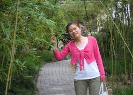

【邮子风采】

--------------------------------
李淑珍（2011/2012学年“十佳青年先锋——自强先锋”荣誉称号获得者）
个人简介：2010级自动化学院本科生
在校期间多次获得国家励志奖学金、校二等奖学金、校“三好学生”、校“优秀团员”等荣誉，现任校达人瑜伽协会会长及班级团支书。
她从小身体孱弱，两次被推上手术台；她家境贫寒，为了顺利完成学业，暑假期间单身前往上海、广州等地打工以补家用。她吃得苦不怕累，刷过盘子，发过传单，也做过促销。她爱好瑜伽，曾经却因为没有舞蹈功底而自卑，靠着坚持她用自己强大的内心支撑起身体一次次的呼吸与心跳，让前进的脚步将永不停歇。在校外活动中多次代表瑜伽协会在校庆晚会和外校出演节目并大获赞许。她用“生命不息，奋斗不止”来描述一个优秀团员自强不息的大学生活。